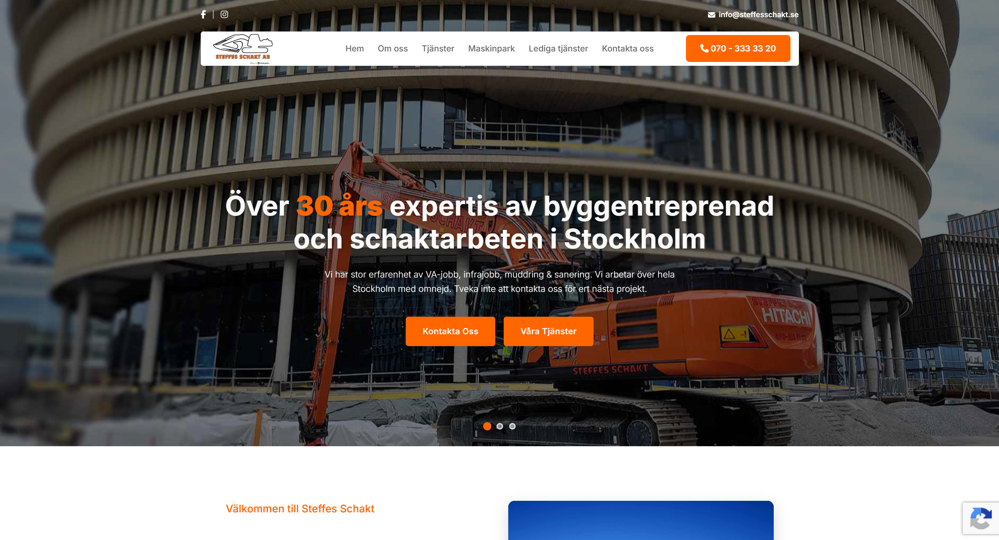

Milad Shirvan.
Frontend developer building clean, functional and accessible web experiences, based in Malmö, Sweden.
Selected
Work
Client sites from my internship, plus personal projects.
-
01
Steffes Schakt
Marketing site for a Stockholm groundwork and excavation firm with 30+ years in the trade. I built the responsive frontend, including service sections, a machine-park gallery and contact forms, in a CMS-driven build.

steffesschakt.se -
02
Power Hub
Corporate site for a group uniting specialist firms across power, energy, fiber and groundwork infrastructure. A clean, minimal build centred on the leadership team, group companies and lead capture.
 power-hub.se
power-hub.se
-
03
Avfallspartner
Site for a circular-economy company that reuses surplus construction material instead of sending it to landfill. A content-rich build with a services grid, customer cases and ISO-certification highlights.
 avfallspartner.se
avfallspartner.se
-
04
Cinema Booking System
A collaborative full-stack team project where users browse films, choose seats and book tickets, with user authentication and an admin panel. I contributed to the frontend and overall architecture.
 github.com
github.com
-
05
Lofi Music Player
A React music player with a glassmorphism interface for playing lofi tracks in a calm, focused space, built to sharpen my component and state skills.
 live demo
live demo
About
I’m a frontend developer based in Malmö, drawn to interfaces that feel effortless and hold up under real use.
I build responsive, accessible websites with clean markup and thoughtful layout. Most recently I worked as a frontend developer at Webblix, shipping live client sites in a CMS environment and collaborating closely with designers.
I care about the details that make an interface feel calm and considered: type, spacing, motion and the small interactions people barely notice. When I’m not coding, I’m usually exploring new design trends or building side projects to push myself further.
HTML, CSS, JavaScript, Responsive Design, React (Vite), Next.js, Tailwind
VS Code, Git, Figma, Adobe XD, Procreate
API Integration, Testing & Debugging, Version Control
Swedish, English, Persian